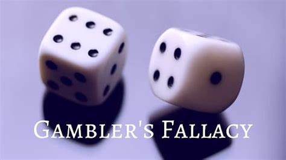

Gambler's Ruin Problem
The Gambler’s Ruin Problem is a fascinating concept in probability theory that has been studied for centuries. It deals with the question of how long a gambler can expect to play a game of chance before they go broke [1].

The problem was first mentioned in a letter from Blaise Pascal to Pierre Fermat in 1656 [2].
The concept has specific relevance for gamblers, but it also leads to mathematical theorems with wide
application and many related results in probability and statistics [2]. Huygens’s result in particular
led to important advances in the mathematical theory of probability [2].
The problem is often applied to gamblers with finite capital playing against a bookie or casino assumed to have “infinite” or much larger amount of capital available. It can then be proven the probability of the gamblers eventual ruin tends to 1 even in the scenario where the game is fair [2].
In a recent research paper titled “Gambler’s Ruin and the ICM”, Persi Diaconis and Stewart N. Ethier consider the gambler’s ruin problem with three players [3]. They seek approximations (and exact formulas) for the elimination order probabilities[3]. They found that the independent chip model (ICM), a frequently used approximation, is inadequate and proposed a regression adjustment, which seems to give good approximations to the elimination order probabilities[3].
Problem Statement
The Gambler’s Ruin Problem in it'ss most basic form consists of two gamblers A and B who are playing a probabilistic game multiple times against each other. Every time the game is played, there is a probability p (0 < p < 1) that gambler A will win against gambler B. Likewise, using basic probability axioms, the probability that gambler B will win is 1 - p. Each gambler also has an initial wealth that limits how much they can bet. The total combined wealth is denoted by k and gambler A has an initial wealth denoted by i, which implies that gambler B has an initial wealth of k - i. Wealth is required to be positive. The last condition we apply to this problem is that both gamblers will play indefinitely until one of them has lost all their initial wealth and thus cannot play anymore.
Imagine that gambler A’s initial wealth i is an integer dollar amount and that each game is played for one dollar. That means that gambler A will have to play at least i games for their wealth to drop to zero. The probability that they win one dollar in each game is p, which will be equal to 1/2 if the game is fair for both gamblers. If p > 1/2, then gambler A has a systematic advantage and if p < 1/2 then gambler A has a systematic disadvantage. The series of games can only end in two outcomes: gambler A has a wealth of k dollars (gambler B lost all their money), or gambler A has a wealth of 0 dollars (gambler B has all the wealth). The main focus of the analysis is to determine the probability that gambler A will end up with a wealth of k dollars instead of 0 dollars. Regardless of the outcome, one of the gamblers will end up in financial ruin, hence the name Gambler’s Ruin.

Other formulations
Another research presents a novel version of the classic three-player game with interest lies in a specific player[4]. They determine the ruin probabilities and expected durations of the game given that our player (i.e. the gambler or the casino’s player) wins or loses[4].
The Gambler’s Ruin problem has several formulations, each with its own nuances and implications. Here are a few:
1. Negative Expected Value: A gambler playing a game with negative expected value will eventually go broke, regardless of their betting system. This concept was initially stated as: A persistent gambler who raises their bet to a fixed fraction of the gambler’s bankroll after a win, but does not reduce it after a loss, will eventually and inevitably go broke, even if each bet has a positive expected value.
2. Infinite Wealth Opponent: Another statement of the concept is that a persistent gambler with finite wealth, playing a fair game (that is, each bet has expected value of zero to both sides) will eventually and inevitably go broke against an opponent with infinite wealth.
3. Weighted Coin Toss: One can imagine the random walk as representing a sequence of tosses of a weighted coin, with a head appearing with probability p and a tail appearing with probability q. An alternative formulation of this situation is that of a gambler playing a sequence of games against an adversary where, in each game, the gambler has probability p of winning.
4. Gambler’s Ruin Formula: To calculate the probability of the gambler reaching their goal, we can use the Gambler’s Ruin formula: Probability of reaching goal = (Goal – Starting bankroll) / (Goal + Starting bankroll).
5. Second-Order Linear Recurrence: The problem can also be formulated as a second-order linear recurrence whose general solution is P(Xn) = a + bn for n = 0, 1, …, 8, and some constants a and b.
In conclusion, the Gambler’s Ruin Problem is a significant concept in probability theory with wide-ranging applications. It continues to be an active area of research, with new insights and methodologies being developed to understand and solve this classic problem.
Source
[1]. https://en.wikipedia.org/wiki/Gambler%27s_ruin
[2]. https://maa.org/sites/default/files/images/upload_library/46/NCTM/The-Pascal-Fermat-Correspondence.pdf
[3]. https://arxiv.org/abs/2011.07610